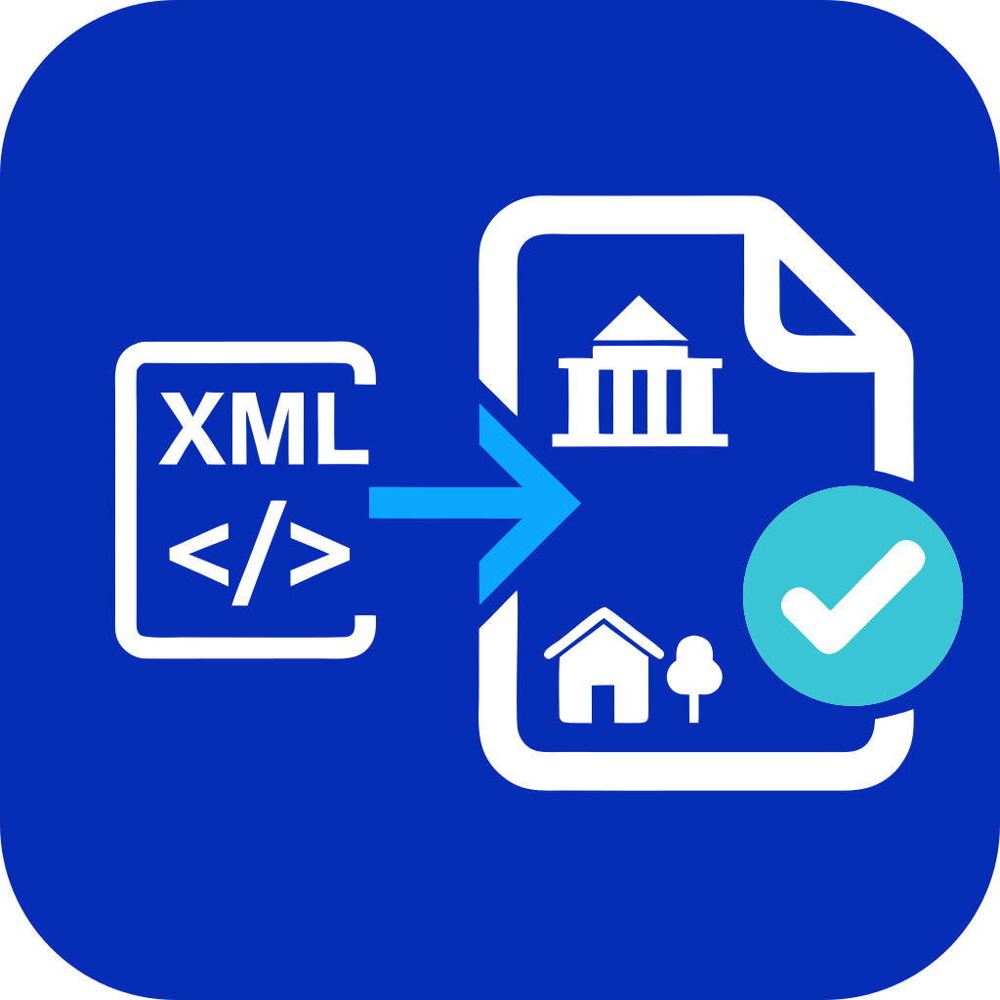
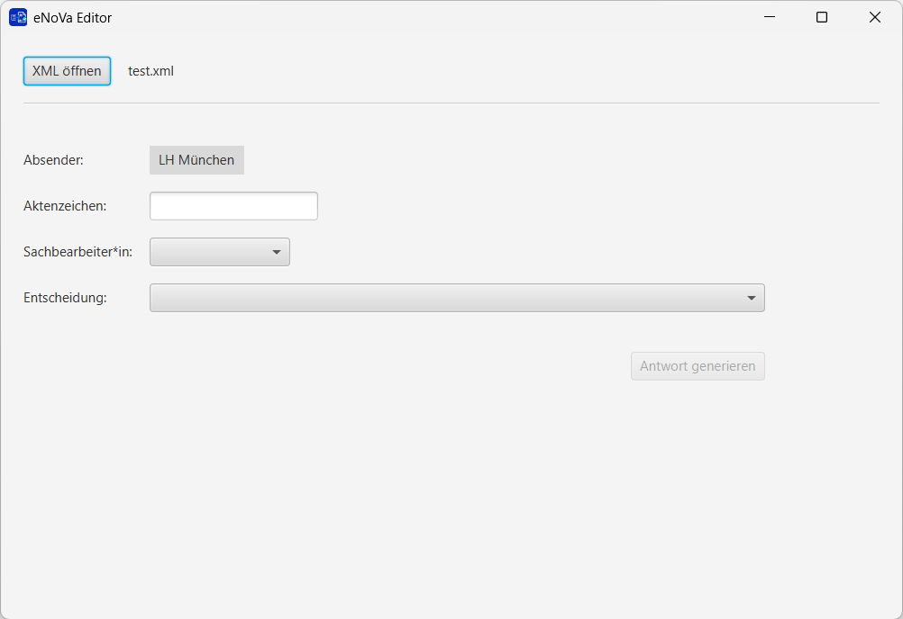

eNoVa-Editor
Der eNoVa-Editor ermöglicht Kommunen, Dateien im Format XJustiz.enova.2900003 in einer menschenlesbaren Form anzuzeigen und eine XJustiz-Antwortdatei zu erstellen.
Was macht der eNoVa-Editor?
Der eNoVa-Editor kann Dateien im Format XJustiz.enova.2900003 , die über das beBPo übermittelt wurden, in einer menschenlesbaren Form verkürzt anzeigen.
Sachbearbeiter*innen können anschließend ihre Entscheidung eintragen und daraus eine XJustiz-Antwortdatei erstellen.

Fragen und Austausch
Jeden Freitag ab 14:00 Uhr findet ein offenes Meeting statt, in dem Fragen zum eNoVa-Editor beantwortet werden.
Bei Fragen erreichen Sie uns unter enova-editor@muenchen.de .
eNoVa Editor
The eNoVa Editor enables German municipalities to display XJustiz.enova.2900003 files in a human-readable format and create an XJustiz response file.
What does the eNoVa Editor do?
The eNoVa Editor can open files in the XJustiz.enova.2900003 format that were submitted via beBPo and display them in a condensed, human-readable format.
The case worker can enter their decision and create an XJustiz response file.
Questions and exchange
Every Friday at 2 p.m. German time, an open meeting is held to answer questions about the eNoVa Editor.
For questions, contact us at enova-editor@muenchen.de .